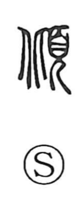

傾

Kun: katamuku, katamukeru, ayaui | On: kei
to lean ・ to incline ・ to tilt ・ to be in danger
Explanation
A phono-semantic character: the component 頃 supplies the sound kei and, in its ancient form, depicts the act of receiving a deity descending from above—straightening one’s posture, bending forward, and bowing in reverence. By adding the person radical 亻 to 頃, the human gesture is made explicit, giving 傾 the sense of leaning or tilting the body. From this image of a body inclined forward, the meaning broadens to the idea of a precarious, dangerous state.